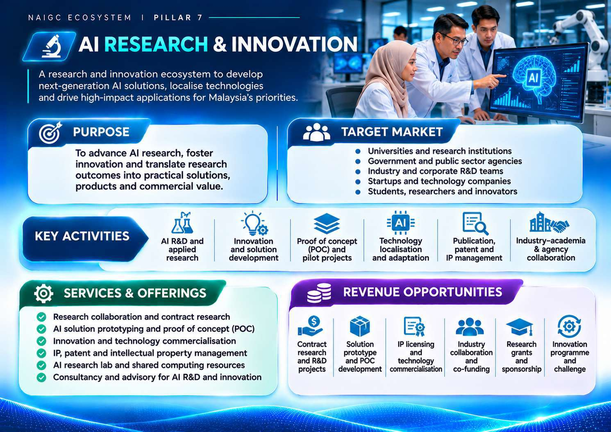

NAIGC
Malaysia AI Generation Centre
SYS//NODE.07 // ONLINE
←
HUB UTAMA
SYS//NODE.07 • STRATEGIC PILLAR 07
AI RESEARCH & INNOVATION
A research and innovation ecosystem to develop next-generation AI solutions, localise technologies and drive high-impact applications for Malaysia’s priorities.
PURPOSE & OBJECTIVES
To advance frontier AI research, foster indigenous intellectual property, and translate groundbreaking academic discoveries into practical, high-value commercial solutions.
TARGET MARKET
- Public and private research universities and academic institutions
- Corporate R&D centers, industrial research labs and tech consortia
- National science, technology and innovation government bodies
- Deep-tech startups developing proprietary algorithms and patents
- Postgraduate researchers, computer scientists and applied AI PhDs
KEY ACTIVITIES & OPERATIONS
Applied R&D Projects
Conducting goal-oriented research addressing national strategic challenges.
Proof-of-Concept (POC) Pilots
Rapid prototyping and bench testing of experimental AI models under real-world constraints.
Technology Localisation
Adapting global foundation models for Bahasa Melayu, regional dialects and ASEAN cultural nuances.
IP & Patent Management
Filing, protecting and commercialising high-value intellectual property and patents.
Academia-Industry Synergy
Bridging university research faculties with commercial corporate funding.
SERVICES & OFFERINGS
- Collaborative Contract Research & Applied AI Development
- Rapid Solution Prototyping, Proof-of-Concept & Sandbox Validation
- Intellectual Property (IP) Strategy, Patent Filing & Commercial Licensing
- High-Performance AI Research Lab & Shared Supercomputing Facilities
- Language Model Fine-Tuning for Malaysian Linguistic Heritage
- Strategic Advisory for Research Commercialisation & Technology Transfer
REVENUE & VALUE OPPORTUNITIES
Contract R&D & Joint Ventures
IP Licensing & Technology Royalties
Prototype & POC Development Fees
National & Global Research Grants
OFFICIAL NAIGC STRATEGIC ROADMAP • PILLAR 07
NATIONAL ARCHIVE • AUTHORISED DOCUMENT

SYS//CORE ONLINE • 8 ECOSYSTEM NODES OPERATIONAL • MALAYSIA AI GENERATION CENTRE